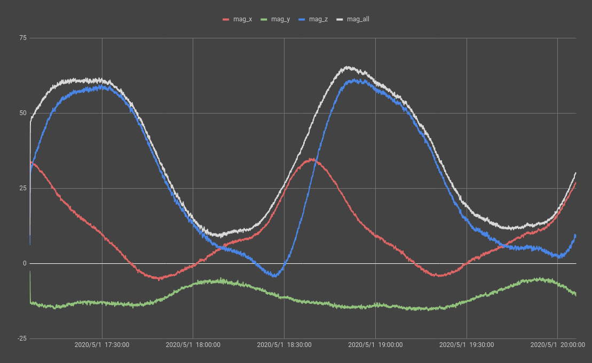

AstroPi Challenge from ESA
2020-07-26
A while back, I learned about AstroPi from a friend. It sounds pretty fun, so I grabbed the robotics club from my school to do it.
AstroPi is a program from the European Space Agency to let students from highschool design an experiment to run on a RaspberryPi, using accelerometer, magnetometer, gyroscope, temperature, pressure and humidity sensor, and camera. The program would be running on the International Space Station (ISS) for 3 hours, and we get the log it creates back to write some reports.
ESA's website says top 10 teams would get a reward. But we don't really like nor good at writing reports… space pictures are rewarding enough.
I came up with the experiment we did. I wanted know how easy it is for a program running in space to crash. Since in the orbit, there's less protection against solar wind and cosmic way provided from Earth's atmosphere and magnetic field, it might cause the RaspberryPi to reset, or have its memory content changed up there.
The rule says I can only write the program in Python, so I made the program to create a NumPy array, and then create a checksum for it using adler32 algorithm from zlib (adler32 ran faster than other algorithms in hashlib from my tests). The program constantly recalculates the checksum during its execution time to determine if the content of the array has been changed. I eventually made 2 arrays, one filled with 1, the other with 0 to see which state of a bit would be the most volatile.
At the same time, the program writes the time to a file. This way, if it crashes, we would know by looking at that file. Of course, all the sensor datas are logged as well. Most importantly, it takes pictures. Every minute, the program capture a photo, and it calculates the ISS's position using Ephem, and writes the position in the GPS tag of the image.
I submitted the code at the end of April, and got the result in the middle of May. From the log, the program ran on 1st of May from 17:06:14 UTC to 20:06:03 UTC. During that time, it orbited the Earth about 2 times. I made a Google Earth project of it, it can be viewed in Google Earth.
For our experiment, nothing happened. The program successfully ran for the whole 3 hours. Memory content was not changed. We thought it was the most possible result for our experiment, since the RaspberryPi used was inside an aluminum box, which is inside the ISS. The wall of ISS and the box can shield most of the radiations. Even though the ISS passed through the famous South Atlantic Anomoly (SAA) twice, it wasn't enough to crash the RaspberryPi.
Despite that the experiment result was pretty boring, the pictures it got are great. Here are a few:


I put all the pictures on Google Drive too
I did find another interesting thing from the magnetometer data. From the graph, we see the detected magnetic field strength changes as the ISS orbits around the Earth. If we compare the time on the graph and the position of ISS, we can see both trough happend when the station was above the SAA mentioned earlier. 
Anyways, I think having my code running in outer space is cool, and Earth looks beautiful from space.
Oh also, the report we did didn't get a reward.